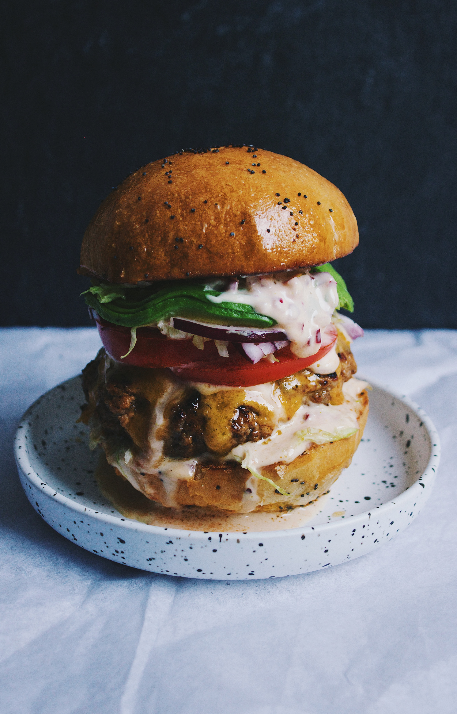

Food makes up an important part of my life. I not only really like eating but going out hanging, out with friends, enjoying culture, for me tends to revolve around food.
I also like to look up recipies and make food myself. Having someone appreciate something you made for them brings me a lot of joy although cooking can be quite laborsome, if the person that is eatting the food truly enjoys the food, then I become happy too and the effort that went in to making the food is all worth it.